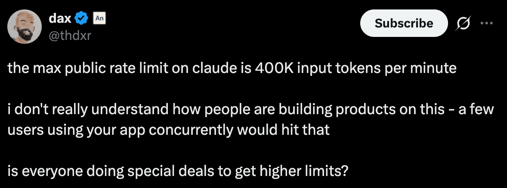
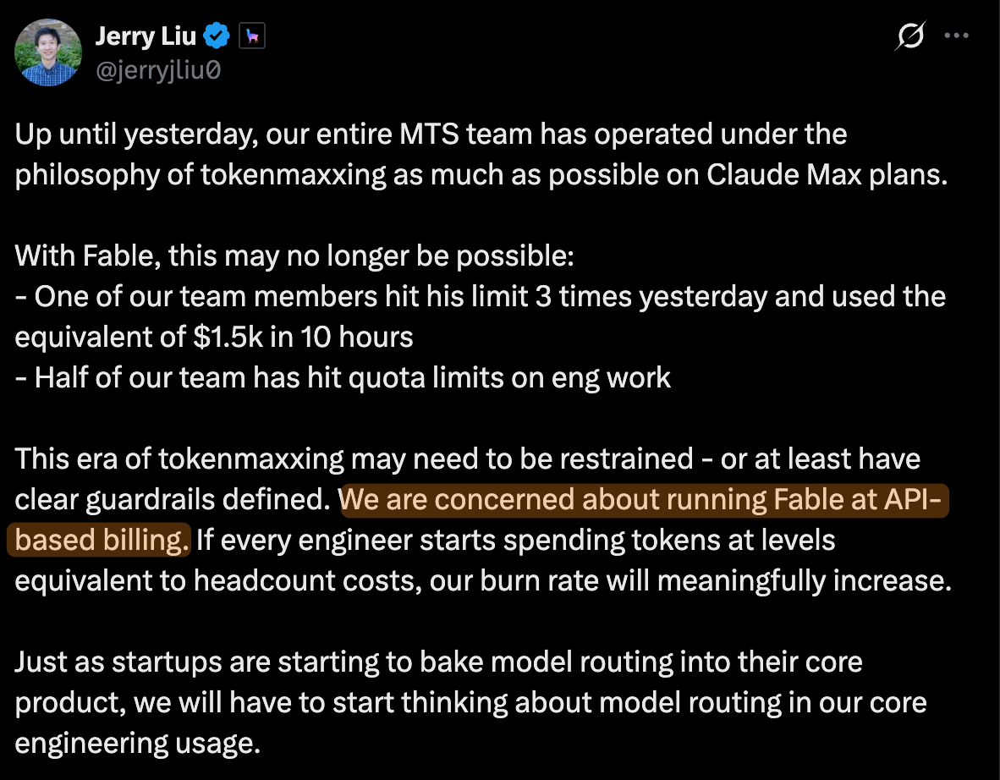
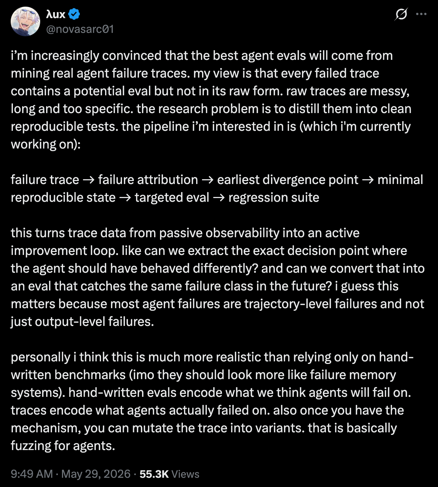

Prompt
You're the Growth PM for the Claude Platform (platform.claude.com) and the north-star goal for your team is to increase Claude API revenue.
Present three growth ideas to drive revenue growth for Claude API, covering:
For each idea, make sure to cover key aspects of your thinking (e.g. hypothesis, success metrics, implementation details, prioritization, risks and mitigations).
Your ideas may influence revenue either directly or indirectly (e.g. increasing acquisition, activation, or retention).
To grow Claude API revenue, I'd focus the Platform on our hero user: software developers at fast-growing, AI-native startups (Series A–D). These devs decide which models to build on, scale spend fastest, and their usage compounds. My intuition tells me new user acquisition is driven by model and product capabilities, so the Platform's lever isn't top-of-funnel demand; it's helping devs "scale your AI workloads on Claude". Our north star is API revenue, and the team is accountable for weekly revenue per active org (in addition to other metrics).
The three bets we'll prioritize:
I'd ship the small bet first (clearest near-term revenue, lowest effort), then the medium, then the big bet once the production-agent thesis is validated.
At a high level, the mission of the Claude Platform is to help guide, monitor, and improve our customer's AI tools. Our customers:
Without the Claude Platform, our customers would not be as successful using our APIs. Additionally, they would likely seek out other tools (or even model providers), causing customers to churn or worse, never try us to begin with.
The users who use our platform today can be separated into three buckets:
While all are important, we need to narrow our focus. I propose these 3 principles to help us align prioritization:
Based on these principles, I believe our core focus should be on software developers (#2). This is our "hero" set of users who are deciding what models/APIs to build with day in and day out. The more we build for them and solve their problems, the more likely it is a business decides to adopt, retain, and grow with Anthropic. While consumers/hobbyists are important, they generally do not control large spend. Additionally, while finance leaders do control large spend, they are less likely to make technical decisions on a model or API to use.
Specifically I'd focus on software developers at fast growing AI native startups, often series A to series D. While enterprises likely drive the largest absolute API spend, AI startups today are compounding growth faster, which I believe leads to more token and API revenue usage long term than today's enterprises. They're likely AI native, have the most frontier use cases, are scaling tokens and spend the fastest, and are ruthless about squeezing out as much performance from each model.
These software developers are savvy and intelligent, they have likely already done research on the top AI models and have either chosen Anthropic's models or are currently evaluating and comparing to competitor's models.
They're much less likely to be convinced by marketing and sales speak and more likely convinced by data, analysis, and product capabilities.
How we win: Acquisition is model and product-led — these developers come to us because our models perform better or our APIs fit their needs better, not because of Platform features — so top-of-funnel demand generation isn't our lever. The Platform's job is to make "scale your AI workloads on Claude" the safe, obvious, and reliable choice (compared to scaling your workload on other platforms).
Our north star is API revenue, but revenue is lagging and influenced by factors outside Platform's control (model launches, pricing, etc). The primary metric our team will be accountable for is weekly revenue per active org (active org = org with paid API usage in the last 7 days). This directly captures our theory of growth: developers who succeed with the Platform scale their usage.
Platform engagement is not a goal in isolation — a customer repeatedly logging in because they are confused or blocked is not success. But repeated use of high-value workflows like monitoring, guardrails, evals, and model adoption is a strong leading indicator that Claude Platform is becoming the control plane for their AI workloads, which should improve retention and expansion over time. With that framing, the metrics we'll track:
Disclaimer: I'd obviously talk to customers. But in lieu of that, I'll use my intuition + customer feedback from public spaces like X
Problem #1: As AI-native startups scale quickly, Claude usage can spike quickly and teams may hit rate limits on their primary model, causing 429s.

Problem #2: As startups scale from simple API calls to long-running agents, costs become harder to predict because one agent can make many model calls, tool calls, and retries before completing a task. Developers lack an easy way, at scale, to see which agents are burning tokens, detect runaway loops, and monitor spend before an agent turns into a production cost incident. Because of this, teams hesitate to scale agents in production or churn when an agent goes haywire.

Problem #3 (big bet): Teams building long-horizon agents can't confidently answer "did this prompt, tool, or model change make my agent better or worse?" Managed Agents lets them execute and trace individual sessions, but there's no higher-level workflow to run a change across many realistic scenarios, compare baseline vs. candidate, and grade whether trajectories regressed before production.

With unlimited resources, we should of course do all of these solutions. However, with limited resources, we must prioritize. I'll propose prioritizing based 3 principles:
Based on those principles, I would prioritize Problem #1: rate-limit upgrade guidance first. It is the least differentiated idea, but it has the clearest near-term revenue path and the lowest engineering effort. Customers hitting 429s are already high-intent users trying to send more traffic to Claude, so helping them understand the limit, recover quickly, and upgrade when eligible should convert an existing scaling pain into incremental usage and revenue.
After that, I would prioritize Problem #2: agent spend guardrails because it best supports our broader strategy of making Claude safe and reliable for production workloads. It is more differentiated than the rate-limit fix and creates the foundation for the bigger agent platform bet.
I would sequence Problem #3: Agent Eval Workbench after validating demand through #2. It likely has the largest long-term strategic upside, but it also has the highest execution risk, so I'd want stronger customer signal (through talking to customers) before fully committing.